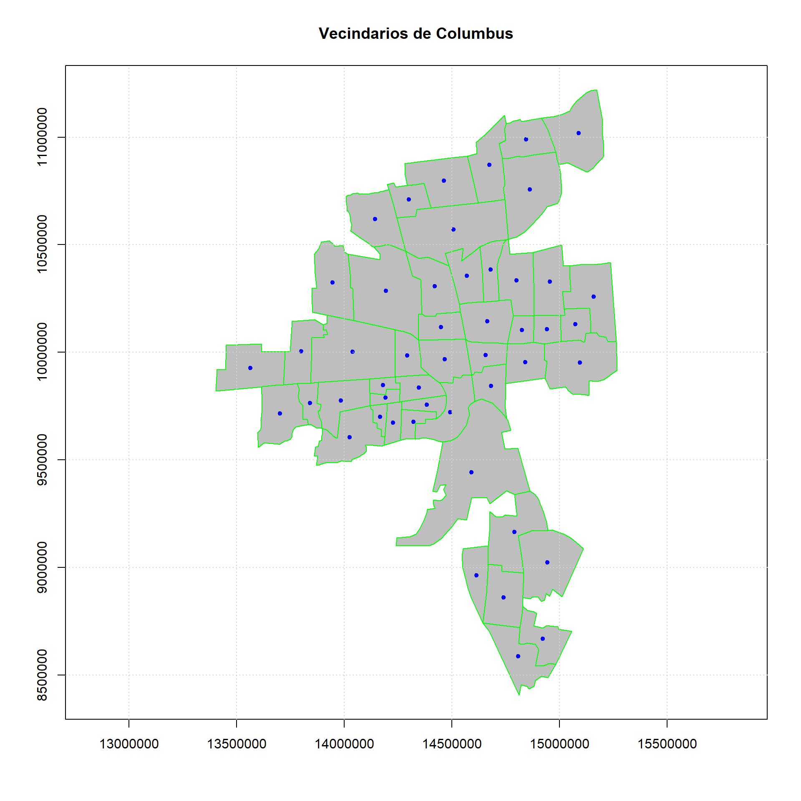
Planteamiento del problema
La criminalidad urbana representa un fenómeno complejo y multicausal que afecta de forma directa la calidad de vida de los ciudadanos. Su análisis y comprensión requieren enfoques que consideren no solo las características socioeconómicas de los territorios, sino también sus interrelaciones espaciales. En este contexto, las técnicas de análisis espacial permiten identificar patrones de dependencia y heterogeneidad que no pueden captarse mediante métodos estadísticos tradicionales.
El presente estudio tiene como objetivo explorar y modelar espacialmente la distribución de los delitos (específicamente, robos residenciales y de vehículos) en los barrios de la ciudad de Columbus, Ohio, en el año 1980, a partir de una base de datos ampliamente utilizada en estudios geoespaciales. Se parte del supuesto de que los niveles de criminalidad en un barrio pueden estar influidos no solo por sus propias condiciones socioeconómicas, sino también por las de sus barrios vecinos. Para ello, se integran herramientas de estadística exploratoria espacial, construcción y comparación de matrices de ponderación espacial, índices de autocorrelación global y local, modelos de regresión espacial y análisis de clúster.
Objetivos
Objetivo general:
Analizar la distribución espacial de los niveles de criminalidad en los barrios de Columbus (1980) mediante técnicas de estadística espacial, modelos de regresión y análisis de clúster, a fin de identificar patrones territoriales, dependencias espaciales y factores socioeconómicos asociados.
Objetivos específicos:
Realizar una estadística exploratoria espacial de los datos, mediante herramientas como boxmaps y visualización de conexiones espaciales, para distintas matrices de vecindad.
Calcular y comparar índices de autocorrelación espacial global y local.
Estimar modelos de regresión paramétricos espaciales que expliquen los niveles de criminalidad a partir de variables socioeconómicas y espaciales, evaluando supuestos, calidad del ajuste e interpretando los resultados.
Aplicar técnicas de análisis de clúster espacial y comparar resultados según distintas matrices de vecindad ,, con el fin de caracterizar zonas homogéneas en cuanto a los niveles de criminalidad.
Descripción de variables
En este estudio se utiliza la base de datos “Columbus Crime 1980”, que contiene información para 49 barrios de la ciudad de Columbus, Ohio. La variable de interés es la tasa de criminalidad, mientras que las variables explicativas o covariables corresponden a características socioeconómicas, de infraestructura y localización. A continuación se describen las variables utilizadas:
CRIME: Número de delitos residenciales y robos de vehículos por cada 1.000 hogares. Es la variable dependiente del estudio.
HOVAL : Valor promedio de la vivienda en miles de dólares. Se interpreta como una medida del nivel económico del barrio.
INC : Ingreso promedio de los hogares en miles de dólares. También refleja el nivel socioeconómico de los residentes.
OPEN : Área de espacio abierto en el barrio. Puede relacionarse con planificación urbana o disponibilidad de espacios públicos.
PLUMB : Porcentaje de viviendas sin acceso a servicios de plomería. Indica condiciones deficientes de infraestructura.
DISCBD : Distancia al centro de negocios de la ciudad. Se considera una variable de localización geográfica con posible relación con el acceso a servicios y oportunidades.
CP : Variable binaria que indica si el barrio pertenece al núcleo urbano (1) o a la periferia (0), útil para capturar diferencias estructurales en la distribución de la criminalidad.
Estas variables permitirán evaluar no solo los factores asociados a la criminalidad en cada barrio, sino también los posibles efectos espaciales que influyen en su distribución geográfica.
A continuación, se presenta el mapa de Columbus con su división por vecindarios y sus respectivos centroides
Análisis exploratorio espacial de los datos
Como primer acercamiento a los datos, se realizaron mapas temáticos para observar la distribución espacial tanto de la variable dependiente (tasa de criminalidad) como de las covariables seleccionadas. Esta exploración permite identificar patrones geográficos iniciales que podrían ser relevantes en el análisis posterior.
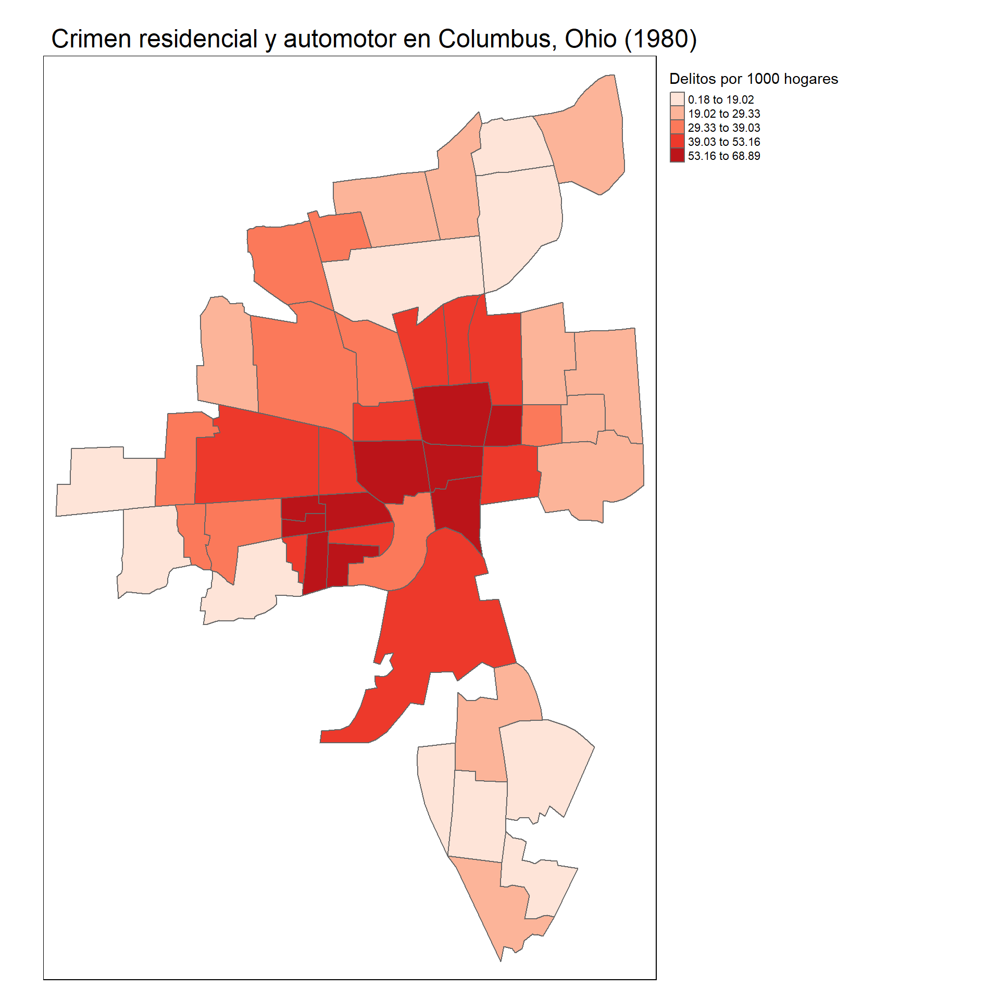
En el primer mapa, se observa claramente un patrón espacial en la distribución de la criminalidad. Los vecindarios ubicados en el centro de la ciudad de Columbus presentan las tasas más altas de delitos por cada 1.000 hogares, con valores que oscilan entre 39,03 y 68,89. Por el contrario, las zonas periféricas muestran tasas de criminalidad considerablemente más bajas. Este gradiente centro-periferia sugiere la existencia de dependencia espacial y posibles factores estructurales que contribuyen a la concentración de delitos en áreas céntricas.
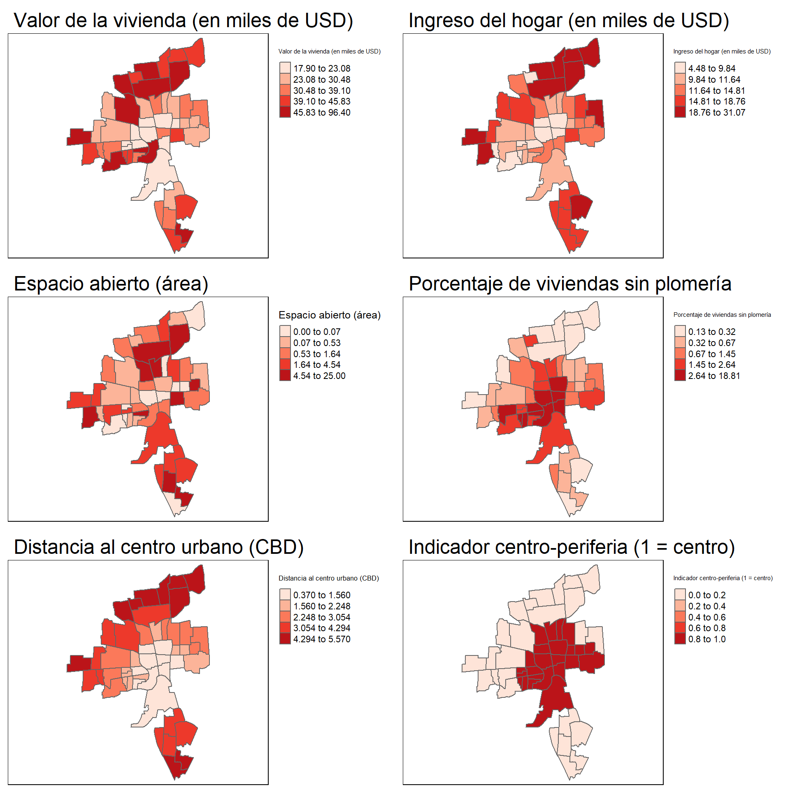
Al observar los mapas de las covariables, se identifican varios patrones de interés:
El valor de la vivienda y el ingreso del hogar muestran valores más bajos en las zonas céntricas y más altos en la periferia, lo que sugiere una posible relación inversa con la criminalidad.
El porcentaje de viviendas sin plomería se concentra en los vecindarios del centro, coincidiendo con las zonas de mayor criminalidad.
El área de espacio abierto no presenta un patrón espacial definido.
La distancia al centro urbano y el indicador centro-periferia muestran relaciones esperadas por construcción.
En conjunto, los mapas revelan que los vecindarios centrales tienden a concentrar condiciones socioeconómicas más precarias, lo que puede estar asociado a una mayor incidencia delictiva.
Además de los mapas, se calculó la matriz de correlación entre las variables de interés. Los resultados confirman los patrones observados en la exploración espacial. La variable CRIME muestra correlaciones negativas moderadas a fuertes con variables socioeconómicas como HOVAL (−0.57), INC (−0.70) y DISCBD (−0.74), indicando que mayores niveles de ingreso, valor de vivienda o distancia al centro urbano se asocian con menores niveles de criminalidad. Por el contrario, muestra correlaciones positivas con PLUMB (0.43) y especialmente con CP (0.75), lo que respalda la idea de que los barrios céntricos y con menor infraestructura básica presentan mayores tasas delictivas. En general, los coeficientes refuerzan la existencia de relaciones estructurales entre las variables socioeconómicas, de localización y la criminalidad.
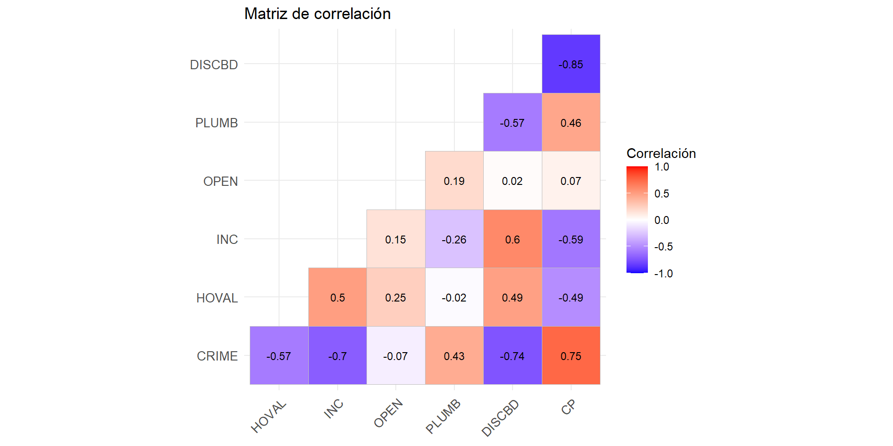
MATRICES DE VECINDADES
Con el objetivo de explorar la estructura espacial del fenómeno delictivo en Columbus (1980), se definieron diversas matrices de pesos espaciales que describen la relación de vecindad entre los barrios. Estas matrices fueron construidas a partir de distintos criterios: contigüidad (Rook y Queen), grafos geométricos (Triangulación, SOI, Gabriel, Relativa) y proximidad (k vecinos más cercanos, con k = 1, 2, 3, 4), tanto en versiones binarias como ponderadas.
Para cada una de estas 20 matrices, se calculó el índice de Moran Global para la variable CRIME, junto con su valor-p asociado, con el fin de evaluar la presencia de autocorrelación espacial significativa. La siguiente tabla muestra los resultados obtenidos, ordenados de mayor a menor según el valor del índice de Moran. Se observa que todos los valores son positivos y altamente significativos, lo cual confirma la existencia de una fuerte dependencia espacial en los niveles de criminalidad registrados en los barrios de la ciudad.
| Matriz | Índice de Moran | Valor p |
|---|---|---|
| KNN 2 Binaria | 0.6073 | 0.0000015 |
| KNN 2 Ponderada | 0.6073 | 0.0000015 |
| Relativa Binaria | 0.6014 | 0.0000008 |
| KNN 4 Binaria | 0.5995 | 0.0000000 |
| KNN 4 Ponderada | 0.5995 | 0.0000000 |
| KNN 1 Binaria | 0.5986 | 0.0003945 |
| KNN 1 Ponderada | 0.5986 | 0.0003945 |
| Relativa Ponderada | 0.5929 | 0.0000028 |
| Gabriel Binaria | 0.5743 | 0.0000000 |
| KNN 3 Binaria | 0.5657 | 0.0000000 |
| KNN 3 Ponderada | 0.5657 | 0.0000000 |
| Gabriel Ponderada | 0.5610 | 0.0000000 |
| SOI Ponderada | 0.5565 | 0.0000000 |
| Triangulación Ponderada | 0.5521 | 0.0000000 |
| Triangulación Binaria | 0.5494 | 0.0000000 |
| SOI Binaria | 0.5369 | 0.0000000 |
| Adyacencia Rook Ponderada | 0.5237 | 0.0000000 |
| Adyacencia Rook Binaria | 0.5194 | 0.0000000 |
| Adyacencia Queen Binaria | 0.5155 | 0.0000000 |
| Adyacencia Queen Ponderada | 0.5002 | 0.0000000 |
A efectos prácticos, y con el fin de mantener una estructura uniforme a lo largo del trabajo, se optó por utilizar una única matriz de vecindad por modelo (es decir, sin cambiar la matriz para variables independientes), priorizando la simplicidad interpretativa. En consecuencia, se seleccionaron cuatro matrices con buenos niveles de autocorrelación, que permiten comparar distintos enfoques vecinales. Las matrices elegidas fueron:
KNN 2 Ponderada
Relativa Binaria
KNN 4 Ponderada
KNN 1 Ponderada
Estas matrices representan distintas formas de conceptualizar el espacio: desde la proximidad estricta (KNN 1) hasta redes más densas (KNN 4), y permiten contrastar cómo se comportan los modelos bajo diferentes estructuras espaciales.
Con el fin de ilustrar gráficamente las estructuras espaciales utilizadas en el modelado, se construyeron mapas para cada una de las cuatro matrices de vecindad seleccionadas: KNN 2 Ponderada, KNN 4 Ponderada, Relativa Binaria y KNN 1 Ponderada. En cada uno de estos mapas se representa la red de conexiones espaciales sobre el plano de los barrios de Columbus, mostrando de forma clara la densidad y distribución de las relaciones entre unidades vecinas.
Estas visualizaciones permiten comparar visualmente la intensidad de las conexiones entre barrios: por ejemplo, la matriz KNN 4 Ponderada genera una red más densa al incluir más vecinos por unidad, mientras que KNN 1 Ponderada presenta una estructura más dispersa y localizada. La Relativa Binaria, por otro lado, incorpora conexiones más variadas al basarse en relaciones geométricas entre puntos, proporcionando una topología distinta a las construidas por cercanía estricta.
Estas representaciones sirven como apoyo visual para comprender cómo se estructura la dependencia espacial en los modelos propuestos.
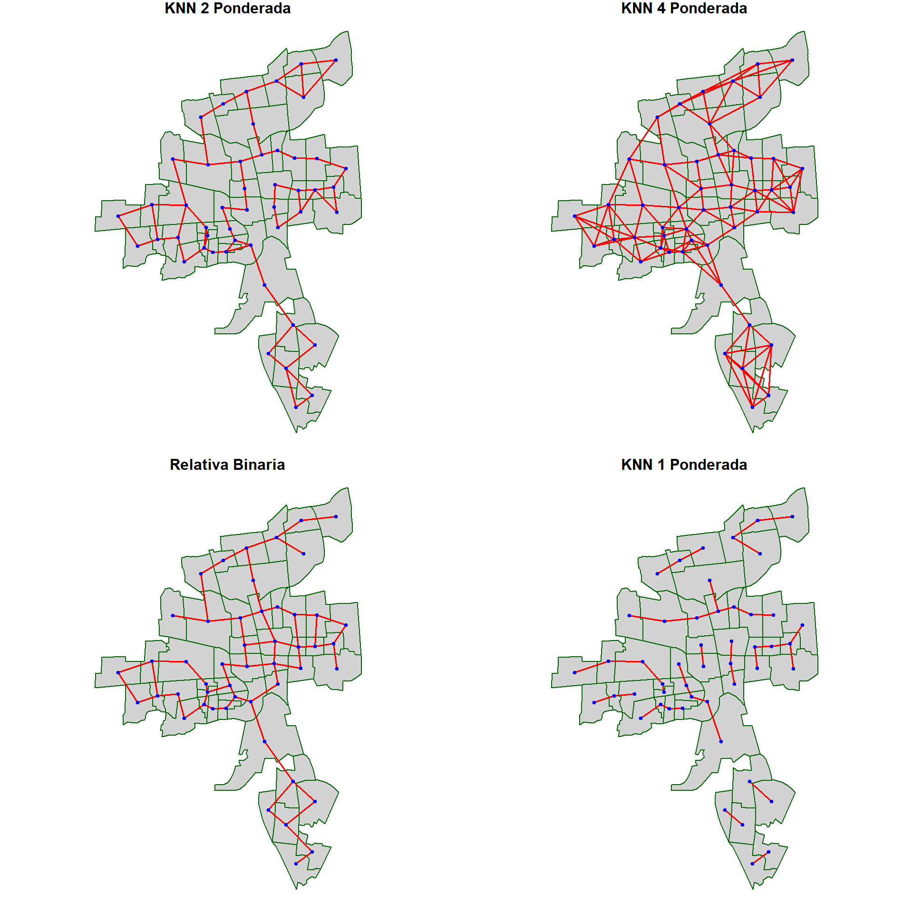
Dispersogramas de Moran
Se construyeron dispersogramas de Moran para las cuatro matrices de vecindad seleccionadas, usando como variable de interés la tasa de delitos por mil hogares. En el eje X se representa dicha tasa, y en el eje Y el valor espacialmente rezagado, lo que permite visualizar la dependencia espacial entre los barrios.
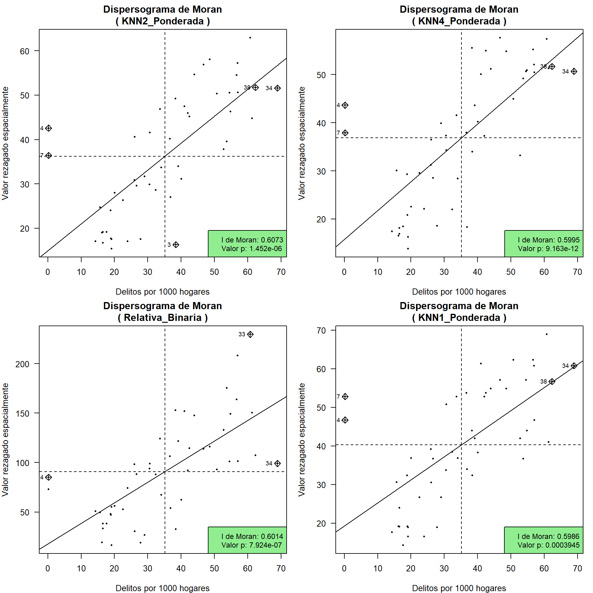
índices locales de Getis y Ord
En todos los casos se observa una clara tendencia lineal creciente, lo que indica una autocorrelación espacial positiva: es decir, barrios con altas tasas de delitos tienden a estar rodeados de otros barrios con tasas igualmente altas, y lo mismo ocurre con las tasas bajas. Esto confirma que el fenómeno delictivo no está distribuido aleatoriamente en el espacio, sino que presenta agrupamientos.
A continuación se se procedió al cálculo del estadístico local G de Getis y Ord para cada una de las matrices de interés. Este estadístico permite identificar conglomerados espaciales de altos o bajos valores (hotspots y coldspots), proporcionando así información detallada sobre la distribución local del fenómeno. Además, mediante 1000 permutaciones Monte Carlo se obtuvieron valores-p empíricos, permitiendo evaluar la significancia estadística de los grupos detectados. Los resultados se visualizan en mapas donde se destacan zonas con concentraciones locales altas o bajas de criminalidad.
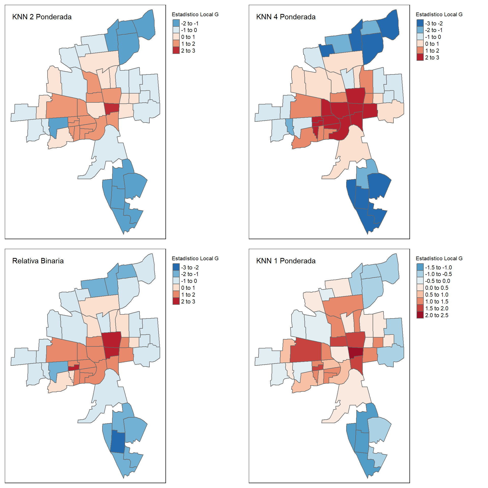
En general, los resultados muestran una clara presencia de agrupamientos locales de altos valores de criminalidad (hotspots), particularmente en los vecindarios ubicados en el centro de la ciudad, donde el estadístico G toma valores positivos entre 1 y 2, e incluso mayores bajo ciertas configuraciones.
Este patrón se observa con mayor claridad cuando se utiliza la matriz KNN con 4 vecinos ponderados, donde los vecindarios centrales presentan tonalidades rojas más intensas, indicando un estadístico local G más alto. Esto sugiere no solo una alta criminalidad en esos barrios, sino también que están rodeados por otros con niveles igualmente altos, lo que refuerza la presencia de un núcleo crítico. En contraste, los vecindarios situados al sur y al nororiente muestran valores negativos del estadístico G (entre -2 y -1), evidenciando conglomerados de baja criminalidad o “coldspots”.
En el caso de la matriz KNN con 1 vecino ponderado, los valores del estadístico tienden a dispersarse más, y aunque los patrones generales se mantienen, la señal de agrupamiento es menos definida debido al número reducido de vecinos considerados. Por su parte, la matriz relativa binaria también refleja el patrón central de concentración delictiva, aunque con una intensidad menor tanto en los hotspots como en los coldspots, mostrando valores G generalmente entre 1 y 2 en el centro, y entre -2 y -1 en las zonas periféricas.
En conjunto, todos los métodos detectan una estructura espacial común, con mayor o menor intensidad: una zona central con alta criminalidad agrupada y áreas periféricas con niveles más bajos. Las diferencias entre los mapas permiten contrastar cómo la definición del vecindario afecta la detección y delimitación de estos patrones espaciales.
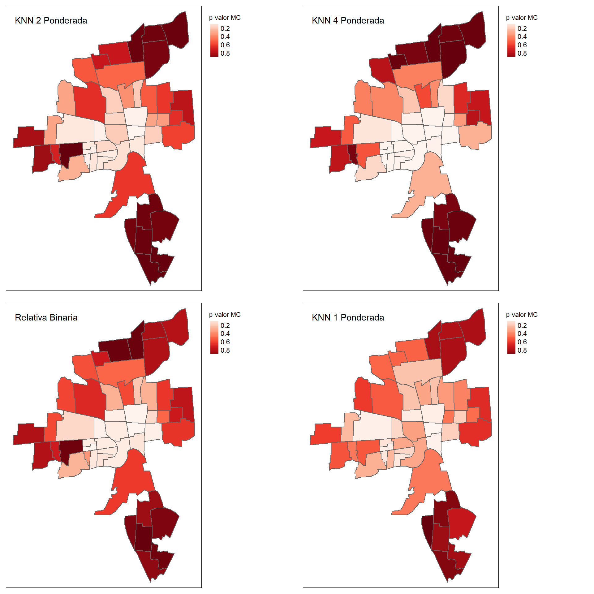
Los mapas de p-valores del estadístico Local G muestran que la mayoría de vecindarios no presentan evidencia de autocorrelación espacial local (p > 0.2). Este patrón es aún más claro en zonas periféricas, donde los valores p tienden a ser mayores. No obstante, un grupo de vecindarios en el centro muestra p-valores consistentemente bajos, especialmente bajo la matriz KNN4, lo que indica una posible concentración espacial significativa. A medida que se amplía el número de vecinos (de KNN1 a KNN4), este patrón central se vuelve más evidente, reflejando una estructura espacial más marcada en esa zona.
MODELOS DE REGRESIÓN ESTIMADOS
Se estimaron ocho modelos de regresión espacial con las covariables anteriormente mencionadas para cada una de las matrices de pesos espaciales consideradas: OLS, SLX, SAR, SEM, SDEM, SDM, Manski y SARAR. Cada uno representa diferentes formas de incorporar la dependencia espacial, como efectos en la variable dependiente (SAR), en los errores (SEM), o en las covariables (SLX, SDM). Para cada matriz, se seleccionó el modelo con menor AIC como el más adecuado. En la mayoría de los casos, el modelo SEM (Spatial Error Model) obtuvo el menor AIC, a excepción de la configuración con la matriz KNN4 donde el modelo con menor AIC resultó ser el SAR, siendo estos los 4 modelos seleccionados para su posterior análisis.
| Modelo | AIC |
|---|---|
| SEM | 366.83 |
| SAR | 367.43 |
| SARAR | 368.63 |
| OLS | 369.25 |
| SDM | 371.95 |
| SLX | 372.76 |
| SDEM | 373.24 |
| Manski | 373.94 |
| Modelo | AIC |
|---|---|
| SEM | 366.19 |
| SARAR | 368.10 |
| SAR | 368.52 |
| OLS | 369.25 |
| SDM | 373.77 |
| SDEM | 374.42 |
| Manski | 375.64 |
| SLX | 375.78 |
| Modelo | AIC |
|---|---|
| SAR | 367.90 |
| SEM | 368.27 |
| OLS | 369.25 |
| SARAR | 369.47 |
| SDM | 376.59 |
| SLX | 376.79 |
| SDEM | 377.33 |
| Manski | 378.58 |
| Modelo | AIC |
|---|---|
| SEM | 366.27 |
| SDEM | 367.41 |
| SDM | 367.62 |
| SAR | 367.82 |
| SARAR | 368.26 |
| Manski | 368.65 |
| OLS | 369.25 |
| SLX | 372.13 |
SELECCIÓN DE VARIABLES
Tras seleccionar los modelos más adecuados según el AIC para cada configuración de matriz de pesos espaciales, se procedió a realizar un proceso de selección de variables mediante una estrategia tipo forward. Inicialmente, se incluyeron todas las covariables del modelo base, y luego se fueron eliminando aquellas con valores-p mayores a 0.05, hasta conservar solo aquellas con evidencia estadística suficiente.
Este procedimiento se aplicó de forma independiente a cada combinación modelo-matriz, resultando en modelos más parsimoniosos y con variables significativas para cada caso.
A continuación se resumen los modelos finales seleccionados, junto con su respectiva matriz espacial y las variables explicativas que permanecieron tras la depuración:
| Modelo | Matriz | Variables_Seleccionadas |
|---|---|---|
| SEM (Modelo 1) | KNN4 ponderada | HOVAL, INC, CP |
| SEM (Modelo 2) | Relativa binaria | HOVAL, INC, PLUMB, CP |
| SAR (Modelo 3) | KNN2 ponderada | HOVAL, INC, CP |
| SEM (Modelo 4) | KNN1 ponderada | HOVAL, INC, PLUMB, CP |
Una vez definidos los cuatro modelos espaciales más apropiados según los criterios de AIC y selección de variables significativas, se procedió a evaluar la adecuación del ajuste en términos de sus residuos. Para ello, se aplicaron dos pruebas clave:
Índice de Moran sobre los residuos: para verificar la presencia de autocorrelación espacial no explicada por los modelos.
Prueba de Breusch-Pagan espacial: para evaluar la hipótesis nula de homocedasticidad (es decir, varianza constante de los errores).
Los resultados del Índice de Moran muestran valores bajos y no significativos para todos los modelos (todos los p-valores > 0.16), lo que indica que los residuos no presentan autocorrelación espacial significativa. Esto sugiere que los modelos fueron capaces de capturar adecuadamente la estructura espacial del fenómeno, es decir, extrajeron exitosamente el componente espacial del crimen.
No obstante, la prueba de Breusch-Pagan muestra que, salvo en el Modelo 1 (SEM con KNN4 ponderada) que es marginalmente no significativo (p ≈ 0.067), los demás modelos presentan evidencia significativa de heterocedasticidad en los residuos. Esto implica que aún persiste cierta inestabilidad estructural en la relación entre las variables independientes y la tasa de crimen, probablemente debido a fenómenos de heterogeneidad espacial no capturada.
En términos prácticos, estos resultados sugieren que aunque se logró remover la autocorrelación espacial en los errores, existen zonas dentro del área de estudio donde el comportamiento del crimen es más variable o más sensible a ciertas condiciones locales. Por tanto, se plantea como siguiente paso trabajar con filtros espaciales para absorber esta heterogeneidad residual.
| Modelo | Matriz | Moran_I | Valorp | BP | valorp |
|---|---|---|---|---|---|
| SEM (Modelo 1) | KNN4 ponderada | 0.0320 | 0.3406 | 7.15 | 0.0672 |
| SEM (Modelo 2) | Relativa binaria | 0.0369 | 0.3210 | 15.39 | 0.0039 |
| SAR (Modelo 3) | KNN2 ponderada | 0.0640 | 0.1689 | 9.53 | 0.0231 |
| SEM (Modelo 4) | KNN1 ponderada | 0.0303 | 0.3837 | 14.81 | 0.0051 |
Aplicación de filtros espaciales
Para corregir esta inestabilidad estructural en los residuos, se aplicaron filtros espaciales mediante la función ME() del paquete spatialreg.
Estos filtros se basan en vectores propios asociados a una versión transformada de la matriz de pesos espaciales. Dichos vectores representan estructuras espaciales no capturadas por el modelo, es decir, patrones latentes de autocorrelación que podrían estar explicando parte del comportamiento espacial del fenómeno (en este caso, el crimen).
La manera en la que se procedió fue la siguiente:
Para cada uno de los modelos, se calculó un vector propio representativo, que maximiza la autocorrelación espacial de los residuos no explicados.
Ese vector propio se agregó como una nueva covariable explicativa en el modelo.
Posteriormente, se volvió a ajustar el modelo espacial correspondiente (SEM o SAR), esta vez incluyendo dicho filtro.
Esto permitió generar una nueva versión de cada modelo, ahora considerando esa estructura espacial adicional.
Después de incorporar los filtros, se repitieron las pruebas de Moran y Breusch-Pagan sobre los nuevos residuos. Los resultados se resumen a continuación:
| Modelo | Matriz | Moran_I | Valorp | BP | valorp |
|---|---|---|---|---|---|
| Modelo 1 + filtro | KNN2 ponderada | 0.0303 | 0.3456 | 7.29 | 0.1213 |
| Modelo 2 + filtro | Relativa binaria | 0.0162 | 0.3835 | 13.64 | 0.0181 |
| Modelo 3 + filtro | KNN4 ponderada | 0.0101 | 0.3632 | 12.39 | 0.0147 |
| Modelo 4 + filtro | KNN1 ponderada | 0.0303 | 0.3837 | 14.81 | 0.0051 |
Los valores del índice de Moran se redujeron aún más y siguen siendo no significativos, confirmando que la autocorrelación espacial fue bien controlada.
Los valores de Breusch-Pagan muestran una mejora sustancial en el Modelo 1, cuyo p-valor ahora es no significativo (p ≈ 0.12), lo que sugiere que el filtro ayudó a estabilizar la varianza de los residuos.
Sin embargo, en los modelos 2, 3 y 4 la heterocedasticidad persiste, aunque con una ligera mejora en los p-valores. Esto indica que la heterogeneidad espacial del crimen no se elimina completamente con un solo eigenvector, pero se logra reducir parcialmente.
ANÁLISIS DE CLUSTER
Finalmente, se aplicó un análisis de agrupamiento por cuantiles (clustering) sobre los valores ajustados de cada modelo, con el objetivo de visualizar y comparar la distribución espacial de la tasa de criminalidad estimada en los diferentes escenarios.
Para ello:
Se dividieron los valores ajustados de cada modelo en 5 niveles (quintiles).
Se representaron mediante mapas coropléticos donde cada color indica un nivel distinto de criminalidad estimada, del rojo más oscuro (mayor tasa) al más claro (menor).
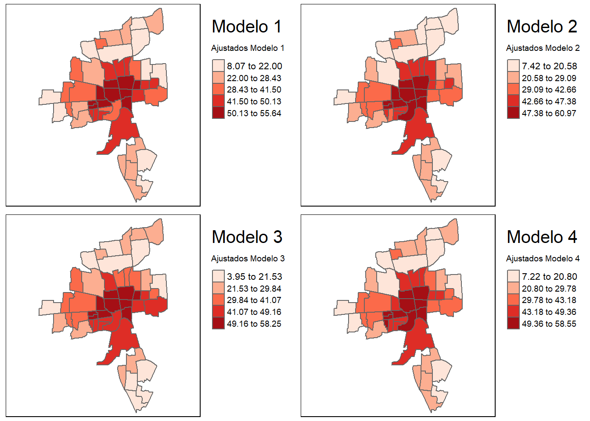
En todos los modelos, los niveles más altos de criminalidad estimada se concentran en el centro del mapa, es decir, en la zona central de Columbus.
Particularmente, el modelo 1, que mostró el mejor desempeño estadístico tras aplicar filtros (sin autocorrelación ni heterocedasticidad), logra delimitar de forma más precisa el núcleo de mayor criminalidad.
En los modelos 2 y 4, aparece un vecindario adicional con alta criminalidad, extendiendo levemente la zona central con tasa elevada.
Los niveles intermedios (clusters 2 y 3) tienden a estar conformados por vecindarios adyacentes al centro, mientras que los niveles más bajos (clusters 4 y 5) se ubican en la periferia: norte, sur, occidente y nororiente de la ciudad.
Este patrón sugiere una disminución gradual de la criminalidad estimada conforme se aleja del centro urbano, reflejando una clara estructura espacial del fenómeno.
El modelo final propuesto es el modelo 1, que corresponde a un modelo de error espacial (SEM) ajustado utilizando la matriz de pesos KNN2 ponderada. Este modelo fue seleccionado porque dicha matriz presentó el mayor índice de Moran en el análisis exploratorio y porque fue el único que no presentó evidencia de heterocedasticidad según la prueba de Breusch-Pagan (valor-p alto), lo que sugiere que los residuos tienen varianza constante.
A continuación, se presenta el resumen final del modelo:
| Variable | Coeficientes |
|---|---|
| Constante | 46.8100 |
| HOVAL | -0.2130 |
| INC | -0.7330 |
| CP | 14.3700 |
| Lambda | 0.2710 |
| Test de Wald | 3.7546 |
| Log-verosimilitud | -175.2000 |
| AIC | 364.4100 |
| Breusch-Pagan | 7.2900 |
Los resultados indican que barrios con mayor valor promedio de vivienda (HOVAL) y mayores ingresos (INC) tienden a presentar menos criminalidad, como lo reflejan sus coeficientes negativos. En contraste, vivir en el núcleo urbano (CP) se asocia con un aumento significativo del crimen. El parámetro espacial (Lambda = 0.271) sugiere una dependencia espacial moderada en los delitos: los valores del crimen en un barrio tienden a estar relacionados con los de sus vecinos. El modelo presenta un ajuste aceptable (AIC = 364.41) y evidencia heterocedasticidad según el test de Breusch-Pagan (7.29).
GRAFICOS DE CALIDAD DEL MODELO
Se evaluó la calidad del modelo SEM mediante tres gráficos: (1) el QQ plot mostró que los residuos siguen aproximadamente una distribución normal, alineándose con la línea de referencia; (2) el gráfico de predichos vs. observados indicó buen ajuste, con puntos cercanos a la línea identidad; y (3) el gráfico de residuos vs. valores ajustados evidenció dispersión aleatoria alrededor de cero, sin patrones sistemáticos. Estos resultados sugieren un buen comportamiento del modelo.
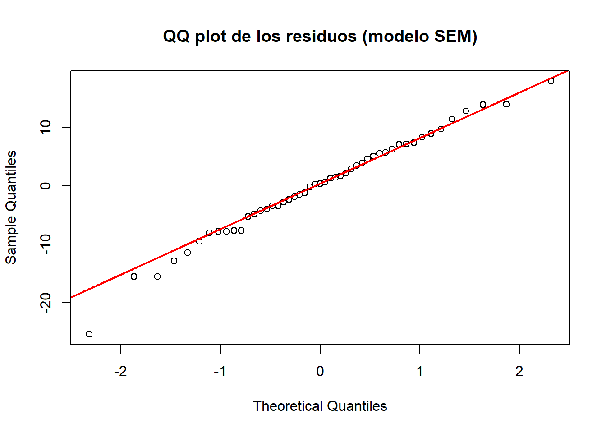
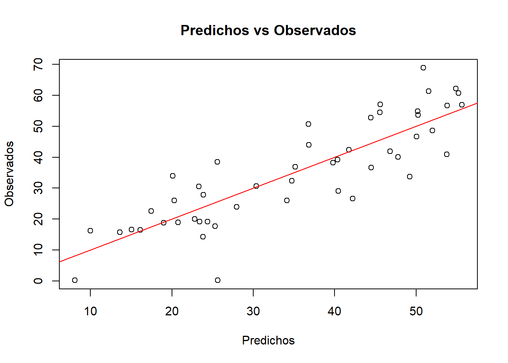
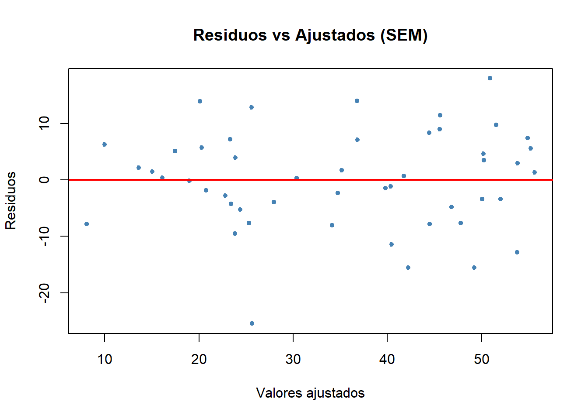
CONCLUSIÓN
El análisis espacial de la tasa de criminalidad en Columbus en 1980 permitió identificar patrones claros y variables clave asociadas al crimen, como el valor promedio de la vivienda, los ingresos y la localización urbana. El modelo SEM con matriz KNN2 ponderada ofreció el mejor desempeño, capturando de forma más precisa la realidad observada. Estos resultados muestran que la criminalidad no se distribuye al azar, sino que responde a condiciones estructurales del entorno urbano. Entender estos factores permite no solo mejorar el análisis estadístico, sino también orientar políticas públicas más justas y efectivas, focalizando esfuerzos en zonas con mayores carencias y diseñando intervenciones más alineadas con las dinámicas territoriales reales.